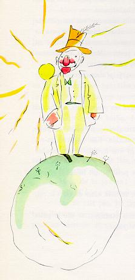

第二个行星上住着一个爱虚荣的人。
“喔唷！一个崇拜我的人来拜访了！”这个爱虚荣的人一见到小王子，老远就叫喊起来。
在那些爱虚荣的人眼里，别人都成了他们的崇拜者。
“你好！”小王子说道。“你的帽子很奇怪。”
|
 |
“这是为了向人致意用的。”爱虚荣的人回答道,“当人们向我欢呼的时候，我就用帽子向他们致意。可惜，没有一个人经过这里。”
小王子不解其意。说道：“啊？是吗？”
爱虚荣的人向小王子建议道：“你用一只手去拍另一只手。”
小王子就拍起巴掌来。这位爱虚荣者就谦逊地举起帽子向小王子致意。
小王子心想：“这比访问那位国王有趣。”于是他又拍起巴掌来。爱虚荣者又举起帽子来向他致意。
小王子这样做了五分钟，之后对这种单调的把戏有点厌倦了，说道：
“要想叫你的帽子掉下来，该怎么做呢？”
可这回爱虚荣者听不进他的话，因为凡是爱虚荣的人只听得进赞美的话。
他问小王子道：“你真的钦佩我吗？”
“钦佩是什么意思？”
“钦佩么，就是承认我是星球上最美的人，服饰最好的人，最富有的人，最聪明的人。”
“可您是您的星球上唯一的人呀！”
“让我高兴吧，请你还是来钦佩我吧！”
小王子轻轻地耸了耸肩膀，说道：“我钦佩你，可是，这有什么能使你这样感兴趣的？”
于是小王子就走开了。
小王子在路上自言自语地说了一句：“这些大人，肯定是十分古怪的。”